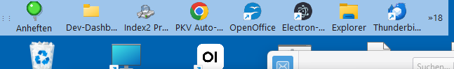

Schnell starten
Häufige Programme, Ordner und Dateien an der Leiste — statt Desktop voll Icons oder Ordner in der Taskleiste verstecken.
Die zweite Taskleiste fürs Büro — Fenster liegen nie unter der Leiste.

Zahlen mit PayPal, Karte und weiteren Methoden.
Läuft auf Windows 8.1, 10 und 11 (64 Bit) — siehe Systemanforderungen.
Zahlung im gleichen Fenster. Zurück: oben Start oder Logo Acrisum.
Häufige Programme, Ordner und Dateien an der Leiste — statt Desktop voll Icons oder Ordner in der Taskleiste verstecken.
Programm schon offen? Ein Klick auf das Symbol holt genau dieses Fenster nach vorne — ohne Suchen in der Windows-Taskleiste oder ständiges Minimieren.
Eine zweite Leiste, kein Ersatz der Windows-Taskleiste. Gewohnte Bedienung bleibt — nur die Startrampe wird besser.
Ausführliche Hilfe mit Animationen: Platz reservieren, verschieben, vergrößern — ohne Englisch und ohne Handbuch-Suche.
Wer gleichzeitig viele Programme offen hat, kennt das: Fenster stapeln sich, die Taskleiste wird zum Ratespiel, oft hilft nur alles minimieren. Genau hier liegt eine Stärke von Acrisum — die Animation unten startet mit diesem „Fenstergemetzel“ und zeigt, wie die Leiste im Alltag entlastet.
Die Demo beginnt bei Schritt 1 — Fenstergemetzel. Alle Schritte sind in der Leiste der Animation anklickbar.
Selbst testen: Oben auf der Seite steht der kostenlose Test-Code — installieren, Leiste befüllen und schauen, ob Ihr Arbeitsablauf mit vielen Fenstern ruhiger wird. Zum Test-Code
Viele Programmleisten legen sich über den Desktop. Acrisum reserviert Platz — Windows verkleinert den Arbeitsbereich, Fenster enden an der Leiste.
Das Wichtigste aus dem Launcher — Stand Version 1.2.7.
Symbol kurz überfahren: kleines Bild des offenen Fensters. Grün = läuft, beige = zuletzt so. Klick holt das Fenster nach vorne — kein Suchen in der Taskleiste.
Beim Überfahren eines Symbols ein Hinweis — auch an linker/rechter Leiste vollständig lesbar.
Wenn Windows den Explorer neu startet, meldet sich die Leiste wieder an — Pins, Zoom und Schrift bleiben.
Speichern mit Sicherungskopie — Ihre Leiste wird nicht durch kaputte Dateien oder leere Standardwerte überschrieben.
Im Anheften-Fenster tippen — Treffer erscheinen mit Namen. Klick = an die Leiste. Ordner und Netzpfade zusätzlich über „Ordner wählen“.
Leiste an drei Rändern, am Bildschirm einrasten. Desktop-Platz passt sich der Position an.
13 Stufen (Strg+ / Strg−). Mit reserviertem Platz wächst der freie Rand mit — lesbar, ohne Icons zu verdecken.
Überlauf hinter » — lange Programmlisten ohne schmalen Icon-Zoo.
Hintergrund wählen (Grau, Schwarz, Büro-Grün …). Drei Transparenz-Stufen — ohne Design-Pakete von fremden Seiten.
Windows 8.1, 10 und 11 (64 Bit). Setup legt Desktop und Startmenü an; Autostart optional. Symbol im Infobereich (Tray).
Kurz und klar — damit niemand nach dem Kauf überrascht ist.
%APPDATA%\Launcher2\ — bleiben bei Updates erhalten.
Wenn Sie schon einmal eine schwebende Leiste am Rand ausprobiert haben, kennen Sie das vielleicht.
Kompakte Seitenleiste (~4/13), langes Menü, Zoom — und Anzeigenamen.
Erste Büro-Tests laufen — Feedback ist willkommen.
Geplant als Nächstes:
Auch Ihre Ideen sind gefragt — schreiben Sie an manibauriedl@gmail.com.
Kurze Meinungen von Bekannten und ersten Testern — ehrlich, ohne Agentur-Text.
Lädt …
Name + ein paar Sätze — erscheint für alle Besucher. Bei Spam antwortet bzw. löscht das Team.
Eine zweite Taskleiste für Windows: Programme, Ordner und Verknüpfungen anheften und mit einem Klick starten. Technisch nutzt er eine reservierte Anwendungsleiste (AppBar — Windows reserviert Randplatz am Bildschirm), keine schwebende Programmleiste (Overlay-Dock).
Viele Programm-Docks (Programmleisten im Dock-Stil) legen sich über den Desktop — Fenster können die Symbole überdecken. Acrisum reserviert Platz: Der Arbeitsbereich endet an der Leiste; nichts liegt darunter.
Bei schwebenden Leisten schalten viele Automatisches Ausblenden (Auto-Hide) ein, damit Fenster nicht im Weg liegen. Bei Acrisum ist das in der Regel nicht nötig — der Rand ist dauerhaft frei reserviert.
Windows verkleinert den sichtbaren Arbeitsbereich, damit Icons und Fenster nicht unter der Leiste liegen. Das ist der Unterschied zur Überlagerung (Overlay), bei der die Leiste nur darüber schwebt. In der Hilfe sehen Sie das als gelben Freiraum in der Animation.
Häufige Programme an die Acrisum-Leiste heften. Beim Überfahren sehen Sie die Fenstervorschau; ein Klick holt das passende Fenster sofort nach vorne — statt in der Windows-Taskleiste zu suchen oder alles zu minimieren. Schon offene Programme werden nicht doppelt gestartet.
Ja. Ordner, Verknüpfungen und Programme lassen sich an die Leiste legen — praktisch, wenn Windows Ordner nicht zuverlässig an die Taskleiste pinnt.
Nein. Acrisum ist eine zweite Leiste — Startrampe für häufig genutzte Dinge, kein Ersatz der Windows-Oberfläche (kein Shell-Ersatz, kein Mac-Look-Paket).
Ab Version 1.2.3 meldet sich die Leiste zuverlässig wieder an — auch nach Explorer-Neustart oder Absturz. Ihre angehefteten Symbole und Einstellungen bleiben erhalten.
Oben, links oder rechts am Bildschirmrand. Der reservierte Platz passt sich der Position an — in der Hilfe als Animation „Verschieben & Platz“.
13 Vergrößerungsstufen per Strg+ / Strg− oder Menü. Mit reserviertem Platz wächst der freie Rand mit — anders als bei reiner Icon-Vergrößerung ohne Platz (Zoom ohne AppBar).
Auf der Leiste Anheften klicken. Im Fenster tippen — passende Einträge erscheinen mit Namen. Symbol anklicken = an die Leiste. Ordner und Netzpfade zusätzlich über „Ordner / Netz wählen“. Anders als bei vielen Docks: nicht vom Desktop ziehen, sondern suchen und auswählen.
Einführung ab 1,30 €. Wer früher kauft, zahlt weniger: täglich +50 Cent, maximal 15,00 €. Später kann der Einstieg höher liegen — für den ersten Test bleibt der niedrige Start.
Windows 8.1, 10 und 11 (64 Bit). Details: Systemanforderungen. Installation per Setup; Einstellungen pro Benutzer unter %APPDATA%\Launcher2\.
PayPal, Karte (Visa/Mastercard u. a.) und weitere Methoden über Stripe. Bezahlung im gleichen Fenster; danach Download auf der Dankeseite.
Oben links auf Acrisum oder im Menü auf Start. Impressum und Datenschutz haben denselben Weg. Nach dem Kauf landest du automatisch auf der Dankeseite — von dort ebenfalls über Start zurück.
Geplant: Benutzung auf mehreren Bildschirmen, mehrere Launcher — und vieles mehr. Erste Büro-Tests laufen; Ihre Ideen sind gefragt.
Der Launcher prüft noch nicht selbst auf Updates. Im Programm: Rechtsklick auf die Leiste → Neue Version… (Hilfe mit Download-Hinweisen). Nach dem Kauf können wir zusätzlich an Ihre Kauf-E-Mail schreiben, wenn eine neue Version bereitsteht. Kein Themen-Newsletter. Abbestellen jederzeit per Mail; Details in der Datenschutzerklärung.
Nur per E-Mail an manibauriedl@gmail.com (kein Telefon bei diesem Betrag). Bitte den Link nutzen — dann kommt die automatische Eingangsbestätigung; Erstattung in der Regel kulant über Stripe. Gesetzliches Widerrufsrecht: Widerrufsbelehrung.
Zahlung über Stripe (PayPal, Karte u. a.) im gleichen Fenster. Es gelten AGB und Widerrufsbelehrung. Nach dem Bezahlen kommst du zur Download-Seite.